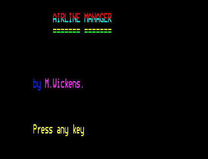

Airline Manager
So, my first retrochallenge entry. Woot! Finally. I've not spent any time on
this so far and I've already been derailed. Friend and fellow contestant
Retrocosm managed to pull two BASIC program we wrote some time around the age of
15 (which is around 28 years ago, ouch!) for a class project, possibly for our
'O' levels. You can read about his process for extracting the BASIC programs
from a 5.25" BBC Micro formatted floppy disk on his blog website
[1
].
My recovered program is called 'Airline Manager'. It looks quite an impressive
piece of BASIC
[2
] for me, at 15, to have written, but on closer inspection it
becomes obvious that it is an unfinished project. Obviously this challenge comes
at a pertinent time this year!

So the current plan is to enhance the program to get it working. I'd like to get
it running on SLAVE
[3
] my Alphaserver 1000A which runs OpenVMS. I'm going to do
this via ALEPH which is a VAXstation 4000/VLC running as a remote clustered
satellite. This enables me to use the VAX version of DEC BASIC which is
interactive - when it was ported to the Alpha architecture the interactive mode
was removed making it a straight compiler.
I'm also in the process of testing that modem access to SLAVE still works
correctly. The NEWUSER application (which allows online self-registration of
OpenVMS accounts on SLAVE) has been updated. The long term goal would be to
create a captive account on SLAVE to run Airline Manager.
Wish me luck!
1.
Retrocosm's blog
2.
airman4.bas
3.
SLAVE via telnet